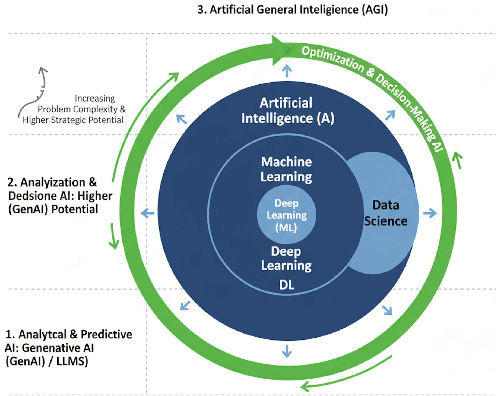

Part 22: The AI Landscape

DS-MLOps ML Landscape
Python 3.12+ | Author: Anthony Faustine
The Problem That Motivates ML
Imagine you are asked to build a system that detects energy theft from smart meter data. Some customers bypass their meters or tamper with the measurement device. The natural first attempt is to write rules: if consumption drops suddenly by more than 50%, flag the account; if recorded usage is significantly lower than the neighbourhood average for three consecutive months, flag it; if a meter reading changes pattern after a maintenance visit, flag it.
You build the rules and test them. They catch some cases but miss many others. Legitimate consumption drops when a family goes on holiday. A household running fewer appliances in summer looks suspicious under your rules. You add exceptions, then exceptions to the exceptions. Every rule surfaces a new case it handles incorrectly. And as theft patterns evolve, your rules become outdated before you finish writing them.
This is not a problem you can solve by writing more rules. The combinations of factors are too numerous, too variable, and too context-dependent for any human to enumerate. The same structure appears wherever the rules become overwhelming: Google Maps routing around an accident and a school run and a concert all happening at the same moment, a recommendation engine personalising to a watch history it has never seen before, a writing assistant composing fluent text for a question no one has ever asked. In every case, the answer is the same.
This is the problem that machine learning was built to solve.
In traditional programming, you provide the rules and the computer applies them to data to produce output. In machine learning, you reverse that flow: you provide data and examples of the desired output, and the computer finds the rules. When the rules are too complex to write by hand, this reversal is the right approach.
In Part 24 you will see this exact problem translated into a five-component ML specification – the structured framing that prevents teams from spending six months building the right system for the wrong question. For now, the goal is to understand why the problem structure demands a different approach entirely.
Key Concept: When rules fail, patterns can be learned
Traditional programming: you write the rules, the computer applies them.
Machine learning: you provide labeled examples, the computer learns the rules.
When the rules are too complex, too numerous, or simply unknown, switching from writing rules to learning from data is the right move. This is not a marginal improvement. It is a qualitatively different approach to building intelligent systems.
1. The AI Landscape
The problems in Section 0 are all applications of Artificial Intelligence (AI), and each sits at a different point on the same spectrum. The energy theft detector learns patterns from meter readings. Google Maps predicts travel times. A writing assistant generates something new from what it learned. To understand what separates them and when each approach applies, you need precise definitions.
Artificial Intelligence, Machine Learning (ML), Deep Learning (DL), and Generative AI (GenAI) are used interchangeably in journalism and product marketing. That conflation leads to poor decisions in practice: reaching for a large language model (LLM) when a logistic regression would solve the problem in an afternoon, or dismissing AI entirely because “we don’t have enough data for ChatGPT.” Each term describes something distinct, and the distinctions matter when you are choosing a tool. The diagram below organises AI into three tiers by what each tier is capable of.

Analytical and predictive AI is where most production systems live today, and the central technology is Machine Learning. An ML system learns from data to produce a useful output, rather than from explicit rules written by hand. That output takes many forms. Sometimes it is a prediction: a fraud score, a demand forecast, a disease diagnosis. Sometimes it is a discovered pattern: a cluster of customers who behave similarly, an anomaly in sensor readings that no rule would have caught. Sometimes it goes beyond analysis entirely and generates something new, as in the writing assistant from Section 0. What unifies these is the source of the intelligence: data, not rules.
Within ML, Deep Learning extended what was possible. By stacking multiple layers of computation, DL models can learn highly complex patterns and non-linear relationships directly from massive amounts of raw data. A traditional ML model struggles when the signal is buried in pixels, audio waveforms, or raw text. A deep learning model finds it anyway, because each layer learns progressively more abstract structure from the layer before. This is why deep learning powers image recognition, speech transcription, and language translation at scale. It is responsible for most of the high-profile AI advances of the past decade.
Generative AI (GenAI) is the most recent step in this progression. Where earlier ML systems detect patterns and return a label or a number, generative systems create new content. Built on Large Language Models (LLMs) pre-trained on billions of text examples, they produce text, images, and code. ChatGPT, GitHub Copilot, and Stable Diffusion are all generative AI systems. The writing assistant from Section 0 belongs here.
All three technologies sit inside the same tier because they share the same foundation: the system learns its intelligence from data. What the output looks like varies widely, from a classification label to a discovered cluster to a generated paragraph. But in every case, the intelligence comes from patterns in data, not from rules a human wrote.
The figure below shows how these technologies nest within each other. It also shows where Data Science sits in relation to them.

Data science is the broader practice that uses ML as its primary tool. It combines ML with statistical analysis, programming, visualisation, and domain knowledge to extract value from data. Not everything in data science is ML: exploratory analysis, data cleaning, and stakeholder communication are all data science work with no model involved. The overlap in the figure is deliberate. When an organisation says it is “using AI”, it almost always means ML applied within a data science workflow.
Knowing what will happen is valuable. Knowing what to do about it is more valuable. Optimization and decision-making AI closes that gap. It combines a predictive model with constrained optimisation to recommend the best action under uncertainty. Google Maps from Section 0 illustrates this precisely. The ML model predicts how long each road segment will take given current traffic, time of day, and historical patterns. That is analytical AI. The optimisation layer then finds the fastest combination of segments from your start to your destination, accounting for tolls, road types, and real-time incidents. The prediction answers “how long will this road take?” The optimisation answers “which road should I take?” The distinctive output is not a prediction but a recommended action.
Both tiers above address specific, bounded problems within defined domains. Artificial General Intelligence (AGI) is the theoretical tier that would not be so constrained. Defined as AI with human-level reasoning, creativity, and judgment across any domain, AGI would generalise knowledge without domain boundaries. It is a long-term research goal.
A common and reasonable question at this point is whether systems like Claude, GPT-4, or Gemini already qualify. They appear impressively general: a single system can write code, explain medical concepts, translate languages, and reason through problems across many domains. But appearing general is not the same as being general. These systems learned broad patterns from broad training data. They do not reason from first principles, cannot update their knowledge from new experiences after training, and fail in systematic ways that reveal the limits of pattern matching rather than genuine understanding. AGI would require a system that sets its own goals, learns continuously from interaction, and reasons reliably in situations it has never encountered. No system deployed today does this.
Key Concept: AI as a continuum, not a single technology
Not every problem requires generative AI or deep learning. In many situations, a well-tuned gradient-boosted tree or a logistic regression delivers higher returns with lower implementation cost. The critical question is not which AI technology is available, but which tier is appropriate for the problem at hand. Matching technical capability to actual business need is a more valuable skill than knowing the latest model architecture.
Common Mistake: Treating AI, ML, and deep learning as synonyms
“We are using AI to solve this” usually means “we trained an ML model on labeled examples.” Saying AI when you mean logistic regression overstates the complexity and makes it harder to have a useful conversation about the approach, its limitations, and its data requirements. Use the correct term for the specific technique. This matters especially when communicating with stakeholders about what a system can and cannot do.
Goal: For each AI system below, identify (a) which tier it belongs to: Analytical AI, Optimization AI, or outside current AI (AGI territory); and (b) which technology it uses: rule-based, classical ML, deep learning, or generative AI.
- A thermostat that turns heating on when the temperature drops below 18 degrees.
- Google Maps choosing the fastest route from your location to your destination, accounting for live traffic and tolls.
- Netflix recommending the next series to watch based on your viewing history and ratings.
- An AI writing assistant generating a draft cover letter from a short prompt.
- AlphaFold predicting the 3D structure of a protein from its amino acid sequence.
- A hospital model classifying chest X-rays as normal, pneumonia, or COVID-19.
- A battery storage controller that decides when to buy and sell electricity to maximise daily revenue.
Next: Part 23: What Is Machine Learning? builds directly on this landscape. You know where ML sits in the AI hierarchy. The next chapter defines precisely what it is, how it learns, what it produces, and when to reach for it.